1. Прості обчислення з перетворенням типів даних.
Метод Parse
Розглянемо приклад_1 створення консольного застосунку для виконання
простих арифметичних обчислень. Запустимо Visual Studio, виберемо мову
програмування C#, тип проєкту Console Application, дамо йому назву Task1_1 і
натиснемо кнопку OK.
Створимо програму для введення двох цілих чисел, визначення їх суми і виведення результату на консоль. Затим уведемо два дійсних числа, обчислимо їх частку і виведемо результат на консоль.
Нижче поданий код мовою C#, який кодує описані в умові прикладу дії.
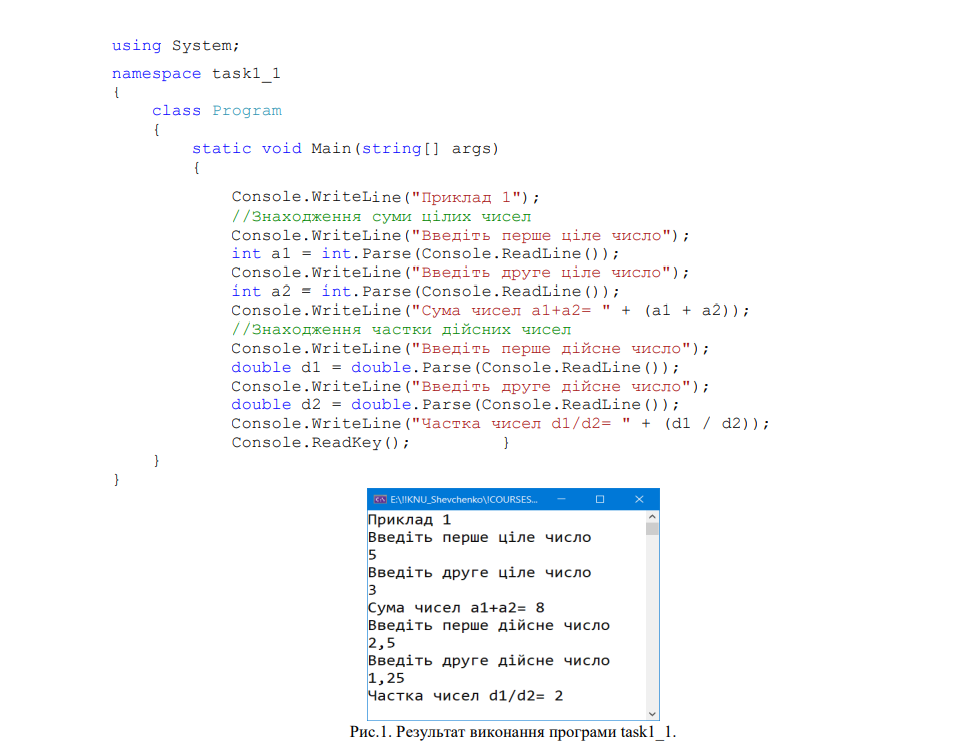Весь код програми мовою C# міститься у файлах з розширенням .cs. За замовчуванням у проекті Visual Studio створюється файл Program.cs, який включає клас Program зі статичним методом Main() - точкою входу в програму. Оператори, що містяться у методі Main(), виконують дії відповідно до умови завдання. Особливістю методу Console.ReadLine() є те, що він може зчитати дані з консолі лише у вигляді рядка, тому дані, що вводяться з консолі, мають тип string. Для виконання арифметичних операцій уведені числа потрібно перетворити в арифметичний тип. В нашому прикладі виконується явне перетворення типів з типу string в типи int і double з використанням методу Parse() і неявне – при виведенні результатів обчислень на консоль.
Розглянемо ще приклад явного перетворення типу.
string str = Console.ReadLine();Тут здійснено консольне введення рядка str, який явно перетворюється у числові типи int, float, double.
Розглянемо приклад1_2 обчислення арифметичного виразу. Нехай потрібно обчислити значення поліному р = ax3 + bx2 + cx + d для будь-якого дійсного x, значення 6 якого вводиться з консолі. Значення a, b, c, d є цілими і ініціалізуються в коді. Текст програми може бути таким:
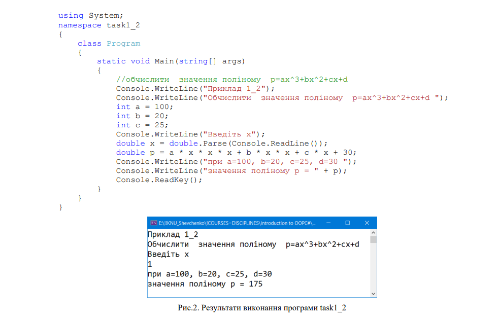Клас Convert містить статичні методи, які також можна використовувати для перетворень типів. Розглянемо приклад використання методів цього класу.
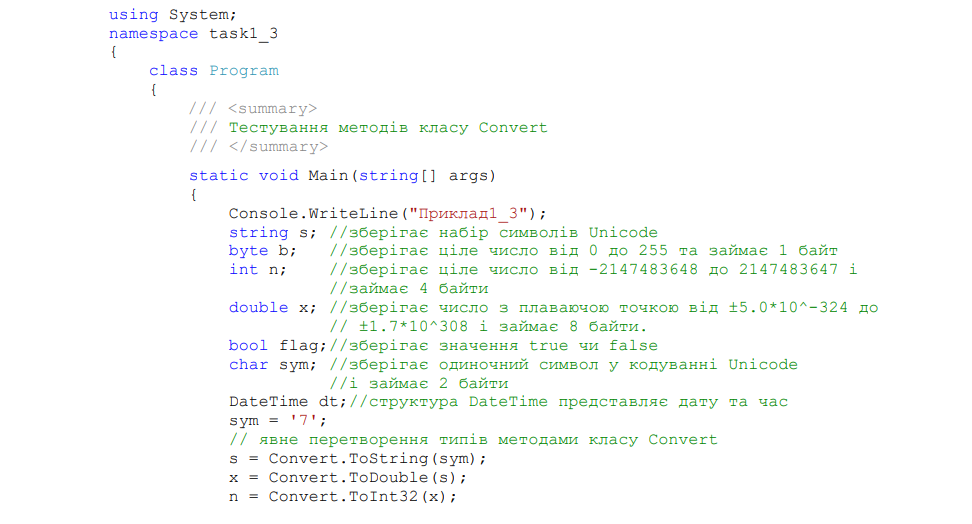 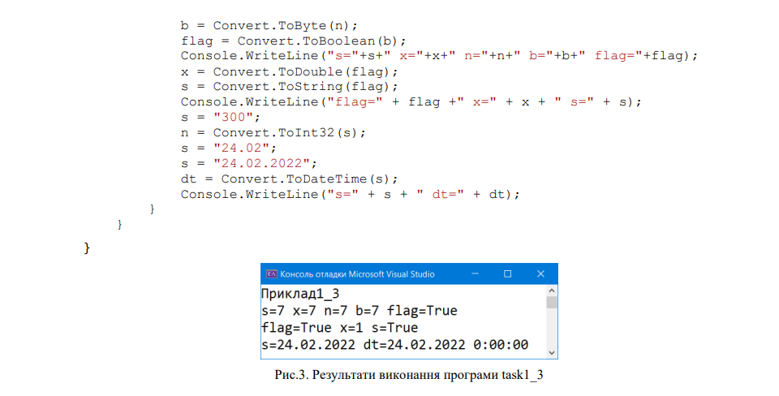Метод ToString() визначений в базовому класі Object, він має свої реалізації для всіх арифметичних типів даних. Далі наведено приклад з лекції 2, який демонструє застосування цього методу.
В першому варіанті використовується явне перетворення типу з арифметичного до типу string, а у другому - неявне.
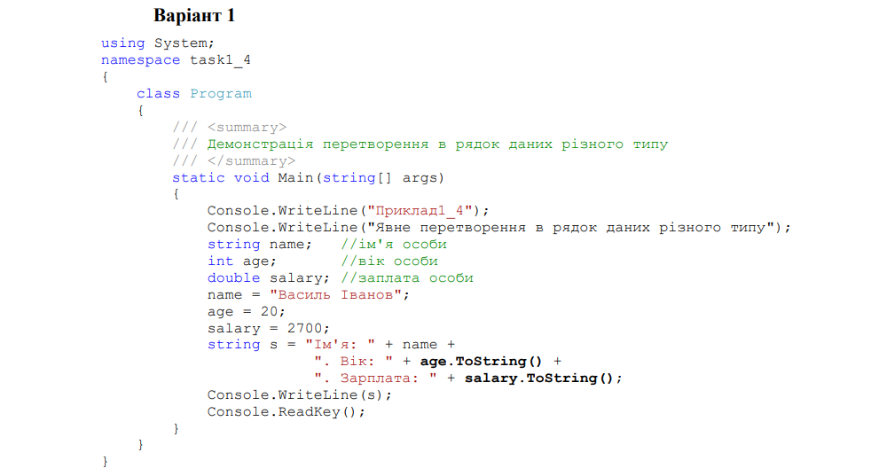 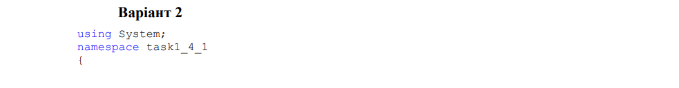 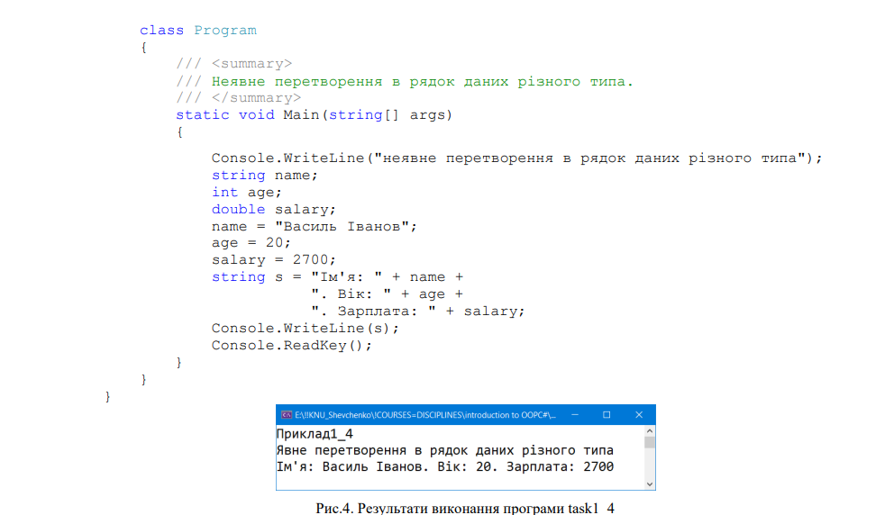• вивести на консоль запрошення для введення імені студента;
• ввести з клавіатури ім'я і зберегти його в текстовому рядку string myName;
• якщо ім'я не введено, то вивести на консоль повідомлення про це і завершити роботу;
• якщо з клавіатури введений рядок, то на консоль вивести привітання;
• вивести на консоль рядок із запитом віку;
• якщо нічого не введено, то вивести повідомлення про це і завершити роботу;
• якщо вік введено, привести його значення до цілого типу int myAge;
• якщо число myAge <= 15, вивести повідомлення "Ви ще не студент";
• якщо число myAge > 40, вивести повідомлення "Вчитися ніколи не пізно!"
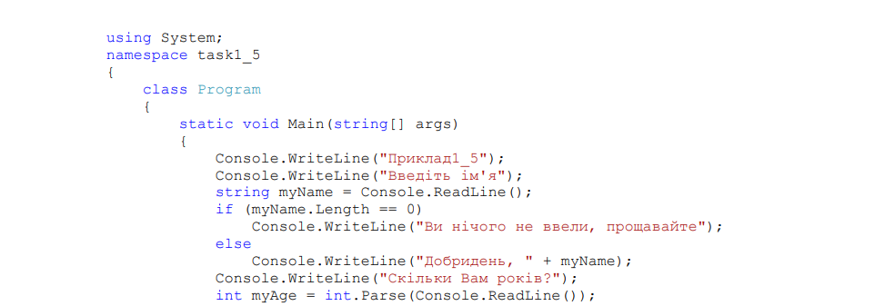 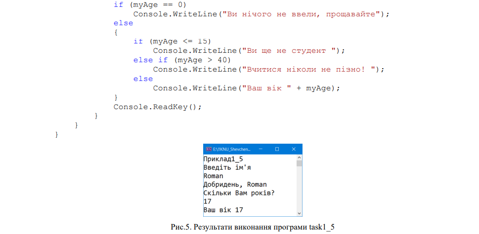В цьому прикладі використовується декілька операторів вкладених розгалуження if. Зверніть увагу, що у C# в операторі if діють ті самі правила синтаксису, що і в С++, а саме, якщо в тілі оператора є лише один оператор, дужки не потрібні, наприклад:
Крім цього виконується явне перетворення типів з типу string в тип int з використанням методу Parse() і неявне при виведенні віку на консоль.
Розробимо простий консольний калькулятор для виконання чотирьох арифметичних операцій. Вхідні дані вводитиме з консолі, результати виводитимемо на консоль. Приклад коду поданий з лекції.
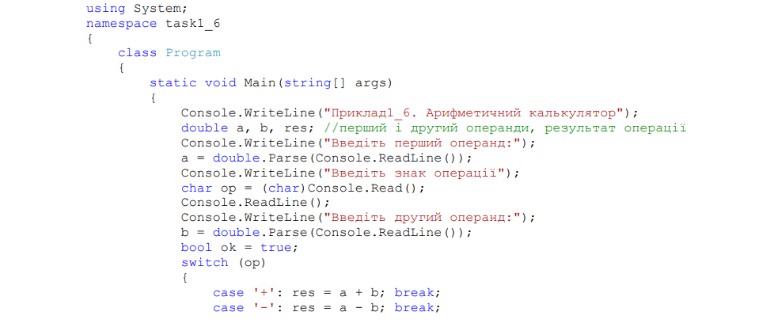 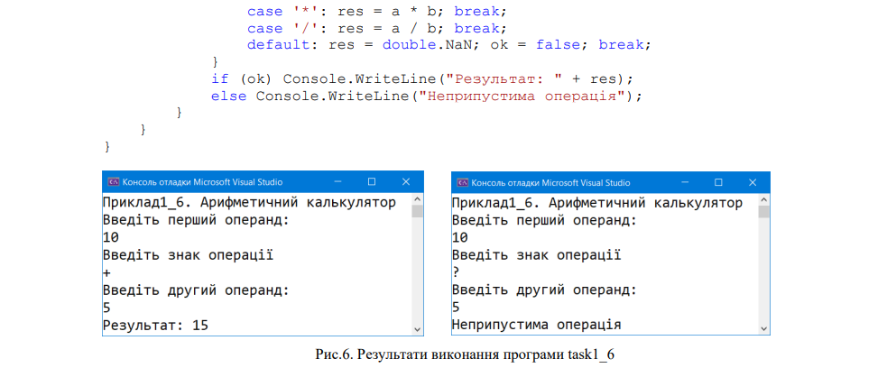
Зверніть увагу, що тип виразу-селектору в операторі switch є char. Також
зверніть увагу, що перетворення з типу string до типу char повинно бути явним, тому
що тип char є типом-значенням, а тип string – посилальним типом
char op = (char)Console.Read();
Наприкінці кожного блоку сase використовується оператор переходу break. При його застосуванні інші блоки case не виконуватимуться. Якщо значення виразу селектору не збігається з жодним значенням після операторів case, то жоден із блоків case не виконується. Однак якщо і в цьому випадку потрібно виконати якісь дії, можна додати в конструкцію switch необов'язковий блок default. У нашому прикладі у випадку введенні операції, яка не співпадає із арифметичною, формується бульове значення ok = false; перевірка якого формує повідомлення "Неприпустима операцiя".
Розглянемо приклад з лекції 4, в якому використовується цикл з передумовою. Потрібно написати програму, яка виводить для аргументу х, що змінюється в заданих границях із заданим кроком, таблицю значень наступної функції:
Назвемо xn – початкове значення аргументу, xk – кінцеве значення аргументу,dx – крок зміни аргументу, t – параметр. Усі величини є дійсні числа типу double. Програма повинна виводити таблицю, що складається з двох стовпців: значень аргументу і відповідних ним значень функції. Таблиця повинна мати заголовок.
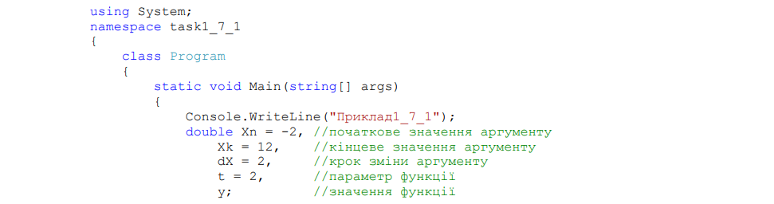 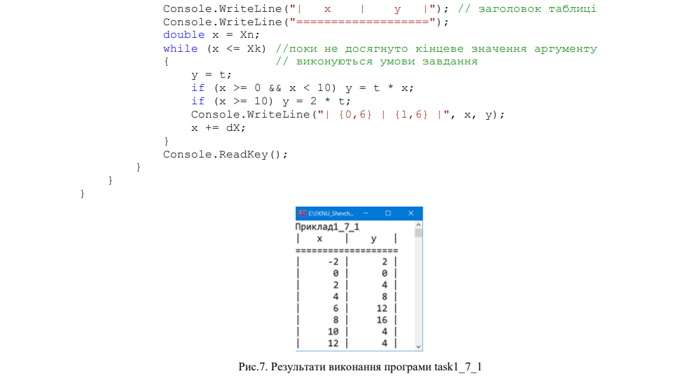Зверніть увагу, що в тілі циклу використовується два оператори if. На кожному кроці циклу обчислюється значення функції. Цикл завершиться, коли умова циклу не буде виконана, тобто значення аргументу x стане більше 12.
Цей тип циклу застосовується в тих випадках, коли тіло циклу необхідно обов'язково виконати хоч б один раз. Розглянемо приклад, в якому на консоль виводиться текст "Будете вчитися?" до тих пір, поки не буду введено з клавіатури 'y'
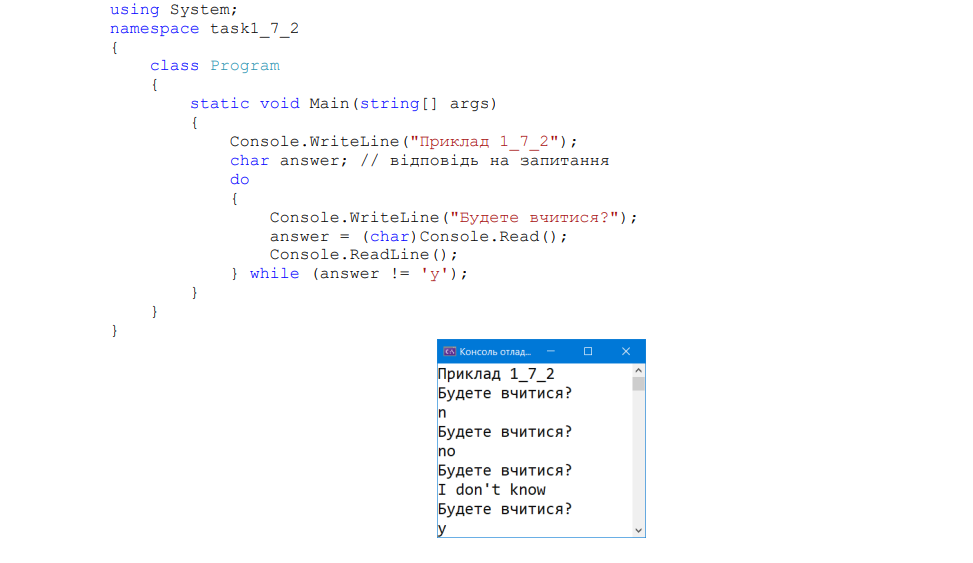Цей тип циклу використовується, коли відомі границі циклу (нижня і верхня). Приклад 4.8 з лекції 3 демонструє використання цього циклу. В прикладі обчислюється сума чисел від 1 до 100. Спочатку створюється змінна цілого типу s, яка ініціалізується нулем. Потім в тілі циклу на кожному кроці до неї додається чергове число: 1, 2, 3,..., 100.
Зверніть увагу, що в тілі циклу відсутні фігурні дужки блоку через те, що в циклі лише один оператор. Також зверніть увагу на використання операції інкремента s += i; замість присвоєння s = s + i;
Обидва оператори дозволені в C# так само, як і в C++. Розглянемо ще один приклад використання оператора циклу з параметром. Потрібно написати метод обчислення функції sin(x), використовуючи розкладання функції в ряд Тейлора за формулою:
При реалізації задачі використати цикл for.
Число x – це значення кута в радіанах, n – кількість членів ряду. Числа x,n потрібно ввести з консолі. Обчислення факторіала виконати в окремому методі. Порівняти отримане значення із стандартним методом обчислення функції sin(x).
В цьому прикладі для обчислення степеню використовується метод Math.Pow(). Статичний клас Math містить методи реалізації математичних функцій.
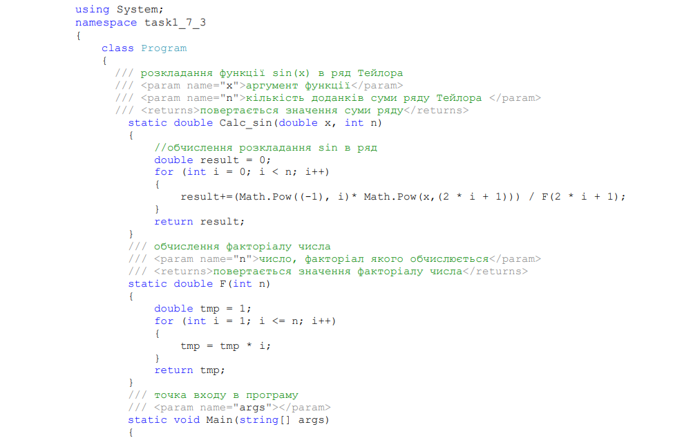 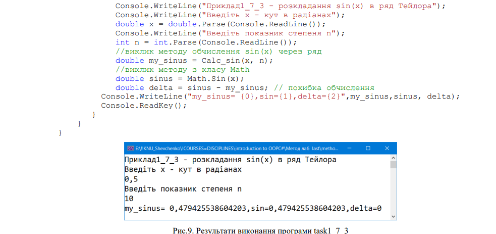